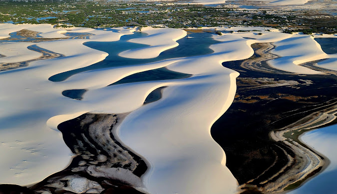

O Maranhão é um estado no Nordeste do Brasil, com capital em São Luís. É conhecido pela cultura rica, com influências indígenas, africanas e portuguesas, e pelas belezas naturais, como os Lençóis Maranhenses. Sua culinária destaca pratos como o arroz de cuxá e o peixe frito, e a economia é baseada na agricultura, mineração e turismo.
